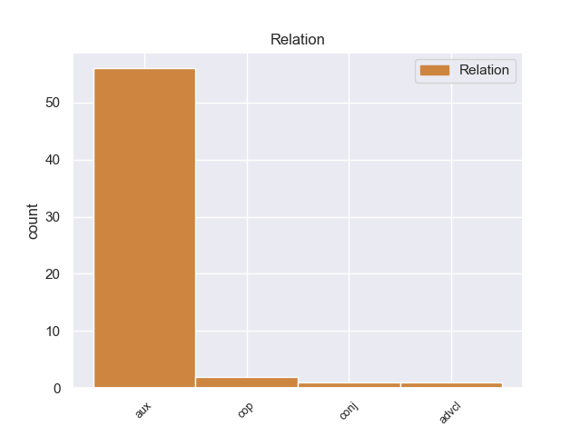
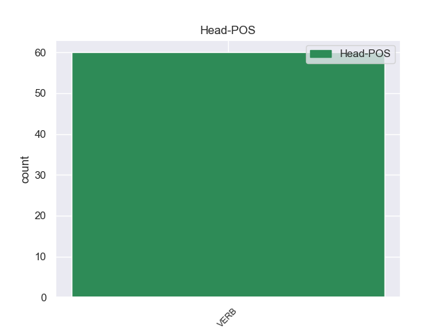
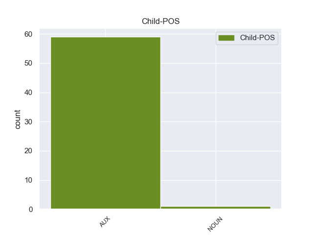

Distribution of features within this leaf



Agreement Rules sorted by frequency.
- When the dependent token is the auxiliary(aux) of the head token, and the dependent token is AUX.
1 Επίσης _ _ _ _ 0 _ _ _
2 ο _ _ _ _ 0 _ _ _
3 Βενιαμίν _ _ _ _ 0 _ _ _
4 Νετανιάχου _ _ _ _ 0 _ _ _
5 εξέφρασε _ _ _ _ 0 _ _ _
6 ικανοποίηση _ _ _ _ 0 _ _ _
7 για _ _ _ _ 0 _ _ _
8 την _ _ _ _ 0 _ _ _
9 θέση _ _ _ _ 0 _ _ _
10 του _ _ _ _ 0 _ _ _
11 Αμερικανού _ _ _ _ 0 _ _ _
12 Προέδρου _ _ _ _ 0 _ _ _
13 ότι _ _ _ _ 0 _ _ _
14 « _ _ _ _ 0 _ _ _
15 το _ _ _ _ 0 _ _ _
16 Ισραήλ _ _ _ _ 0 _ _ _
17 θα _ _ _ _ 0 _ _ _
18 πρέπει πρέπει AUX _ Aspect=Imp|Mood=Ind|Number=Sing|Person=3|Tense=Pres|VerbForm=Fin|Voice=Act 20 aux _ _
19 να _ _ _ _ 0 _ _ _
20 μπορεί μπορώ VERB _ Aspect=Imp|Mood=Ind|Number=Sing|Person=3|Tense=Pres|VerbForm=Fin|Voice=Act 0 _ _ _
21 να _ _ _ _ 0 _ _ _
22 αμυνθεί _ _ _ _ 0 _ _ _
23 ενάντια _ _ _ _ 0 _ _ _
24 σε _ _ _ _ 0 _ _ _
25 οποιαδήποτε _ _ _ _ 0 _ _ _
26 απειλή _ _ _ _ 0 _ _ _
27 » _ _ _ _ 0 _ _ _
28 . _ _ _ _ 0 _ _ _
1 Σε _ _ _ _ 0 _ _ _
2 τελευταία _ _ _ _ 0 _ _ _
3 ανάλυση _ _ _ _ 0 _ _ _
4 λοιπόν _ _ _ _ 0 _ _ _
5 το _ _ _ _ 0 _ _ _
6 ζητούμενο _ _ _ _ 0 _ _ _
7 δεν _ _ _ _ 0 _ _ _
8 είναι είμαι AUX _ Aspect=Imp|Mood=Ind|Number=Sing|Person=3|Tense=Pres|VerbForm=Fin|Voice=Pass 10 cop _ _
9 να _ _ _ _ 0 _ _ _
10 πούμε πω VERB _ Aspect=Imp|Mood=Ind|Number=Plur|Person=1|Tense=Pres|VerbForm=Fin|Voice=Act 0 _ _ _
11 " _ _ _ _ 0 _ _ _
12 ναι _ _ _ _ 0 _ _ _
13 " _ _ _ _ 0 _ _ _
14 σε _ _ _ _ 0 _ _ _
15 κάτι _ _ _ _ 0 _ _ _
16 που _ _ _ _ 0 _ _ _
17 προτείνει _ _ _ _ 0 _ _ _
18 το _ _ _ _ 0 _ _ _
19 Συμβούλιο _ _ _ _ 0 _ _ _
20 , _ _ _ _ 0 _ _ _
21 αντίθετα _ _ _ _ 0 _ _ _
22 , _ _ _ _ 0 _ _ _
23 εμείς _ _ _ _ 0 _ _ _
24 είμαστε _ _ _ _ 0 _ _ _
25 που _ _ _ _ 0 _ _ _
26 υποβάλλουμε _ _ _ _ 0 _ _ _
27 τις _ _ _ _ 0 _ _ _
28 προτάσεις _ _ _ _ 0 _ _ _
29 και _ _ _ _ 0 _ _ _
30 μετά _ _ _ _ 0 _ _ _
31 από _ _ _ _ 0 _ _ _
32 αυτό _ _ _ _ 0 _ _ _
33 πρέπει _ _ _ _ 0 _ _ _
34 να _ _ _ _ 0 _ _ _
35 καταλήξουμε _ _ _ _ 0 _ _ _
36 σε _ _ _ _ 0 _ _ _
37 κάτι _ _ _ _ 0 _ _ _
38 από _ _ _ _ 0 _ _ _
39 κοινού _ _ _ _ 0 _ _ _
40 με _ _ _ _ 0 _ _ _
41 το _ _ _ _ 0 _ _ _
42 Συμβούλιο _ _ _ _ 0 _ _ _
43 . _ _ _ _ 0 _ _ _
1 Σ _ _ _ _ 0 _ _ _
2 το _ _ _ _ 0 _ _ _
3 ένα _ _ _ _ 0 _ _ _
4 κράτος _ _ _ _ 0 _ _ _
5 μπορεί μπορώ VERB _ Aspect=Imp|Mood=Ind|Number=Sing|Person=3|Tense=Pres|VerbForm=Fin|Voice=Act 0 _ _ _
6 κανείς _ _ _ _ 0 _ _ _
7 να _ _ _ _ 0 _ _ _
8 οδηγεί _ _ _ _ 0 _ _ _
9 με _ _ _ _ 0 _ _ _
10 90 _ _ _ _ 0 _ _ _
11 χιλιόμετρα _ _ _ _ 0 _ _ _
12 την _ _ _ _ 0 _ _ _
13 ώρα _ _ _ _ 0 _ _ _
14 , _ _ _ _ 0 _ _ _
15 σ _ _ _ _ 0 _ _ _
16 το _ _ _ _ 0 _ _ _
17 άλλο _ _ _ _ 0 _ _ _
18 με _ _ _ _ 0 _ _ _
19 100 _ _ _ _ 0 _ _ _
20 χιλιόμετρα _ _ _ _ 0 _ _ _
21 την _ _ _ _ 0 _ _ _
22 ώρα _ _ _ _ 0 _ _ _
23 , _ _ _ _ 0 _ _ _
24 ενώ _ _ _ _ 0 _ _ _
25 σ _ _ _ _ 0 _ _ _
26 το _ _ _ _ 0 _ _ _
27 επόμενο _ _ _ _ 0 _ _ _
28 κράτος _ _ _ _ 0 _ _ _
29 μέλος μέλος NOUN _ Aspect=Imp|Mood=Ind|Number=Sing|Person=3|Tense=Pres|VerbForm=Fin|Voice=Act 5 conj _ _
30 μόλις _ _ _ _ 0 _ _ _
31 με _ _ _ _ 0 _ _ _
32 80 _ _ _ _ 0 _ _ _
33 χιλιόμετρα _ _ _ _ 0 _ _ _
34 την _ _ _ _ 0 _ _ _
35 ώρα _ _ _ _ 0 _ _ _
36 . _ _ _ _ 0 _ _ _
1 Πίστευε _ _ _ _ 0 _ _ _
2 ότι _ _ _ _ 0 _ _ _
3 το _ _ _ _ 0 _ _ _
4 κίνημα _ _ _ _ 0 _ _ _
5 τη _ _ _ _ 0 _ _ _
6 συγκεκριμένη _ _ _ _ 0 _ _ _
7 στιγμή _ _ _ _ 0 _ _ _
8 και _ _ _ _ 0 _ _ _
9 αποτέλεσμα _ _ _ _ 0 _ _ _
10 δεν _ _ _ _ 0 _ _ _
11 θα _ _ _ _ 0 _ _ _
12 είχε _ _ _ _ 0 _ _ _
13 και _ _ _ _ 0 _ _ _
14 την _ _ _ _ 0 _ _ _
15 νεοσχηματισθείσα _ _ _ _ 0 _ _ _
16 κυβέρνηση _ _ _ _ 0 _ _ _
17 της _ _ _ _ 0 _ _ _
18 Αθήνας _ _ _ _ 0 _ _ _
19 θα _ _ _ _ 0 _ _ _
20 έφερνε φεάνω VERB _ Aspect=Imp|Mood=Ind|Number=Sing|Person=3|Tense=Past|VerbForm=Fin|Voice=Act 0 _ _ _
21 σε _ _ _ _ 0 _ _ _
22 δύσκολη _ _ _ _ 0 _ _ _
23 θέση _ _ _ _ 0 _ _ _
24 καθώς _ _ _ _ 0 _ _ _
25 είχε έχω AUX _ Aspect=Imp|Mood=Ind|Number=Sing|Person=3|Tense=Past|VerbForm=Fin|Voice=Act 20 advcl _ _
26 να _ _ _ _ 0 _ _ _
27 αντιμετωπίσει _ _ _ _ 0 _ _ _
28 και _ _ _ _ 0 _ _ _
29 το _ _ _ _ 0 _ _ _
30 οικονομικό _ _ _ _ 0 _ _ _
31 πρόβλημα _ _ _ _ 0 _ _ _
32 της _ _ _ _ 0 _ _ _
33 Ελλάδας _ _ _ _ 0 _ _ _
34 που _ _ _ _ 0 _ _ _
35 μόλις _ _ _ _ 0 _ _ _
36 πριν _ _ _ _ 0 _ _ _
37 από _ _ _ _ 0 _ _ _
38 λίγο _ _ _ _ 0 _ _ _
39 είχε _ _ _ _ 0 _ _ _
40 κηρύξει _ _ _ _ 0 _ _ _
41 πτώχευση _ _ _ _ 0 _ _ _
42 . _ _ _ _ 0 _ _ _
Disagree Examples:
1 Ακολούθησε _ _ _ _ 0 _ _ _
2 μια _ _ _ _ 0 _ _ _
3 μακρά _ _ _ _ 0 _ _ _
4 περίοδος _ _ _ _ 0 _ _ _
5 έντασης _ _ _ _ 0 _ _ _
6 μεταξύ _ _ _ _ 0 _ _ _
7 Γιουγκοσλαβίας _ _ _ _ 0 _ _ _
8 και _ _ _ _ 0 _ _ _
9 Βουλγαρίας _ _ _ _ 0 _ _ _
10 , _ _ _ _ 0 _ _ _
11 με _ _ _ _ 0 _ _ _
12 αμοιβαίες _ _ _ _ 0 _ _ _
13 επιρρίψεις _ _ _ _ 0 _ _ _
14 ευθυνών _ _ _ _ 0 _ _ _
15 για _ _ _ _ 0 _ _ _
16 προσπάθεια _ _ _ _ 0 _ _ _
17 προσέγγισης _ _ _ _ 0 _ _ _
18 της _ _ _ _ 0 _ _ _
19 Γιουγκοσλαβικής _ _ _ _ 0 _ _ _
20 Μακεδονίας _ _ _ _ 0 _ _ _
21 , _ _ _ _ 0 _ _ _
22 ενώ _ _ _ _ 0 _ _ _
23 ταυτόχρονα _ _ _ _ 0 _ _ _
24 οι _ _ _ _ 0 _ _ _
25 αρχές _ _ _ _ 0 _ _ _
26 του _ _ _ _ 0 _ _ _
27 κράτους _ _ _ _ 0 _ _ _
28 των _ _ _ _ 0 _ _ _
29 Σκοπίων _ _ _ _ 0 _ _ _
30 είχαν _ _ _ _ 0 _ _ _
31 αρχίσει _ _ _ _ 0 _ _ _
32 μια _ _ _ _ 0 _ _ _
33 συντονισμένη _ _ _ _ 0 _ _ _
34 εκστρατεία _ _ _ _ 0 _ _ _
35 για _ _ _ _ 0 _ _ _
36 τη _ _ _ _ 0 _ _ _
37 διάδοση _ _ _ _ 0 _ _ _
38 των _ _ _ _ 0 _ _ _
39 θέσεών _ _ _ _ 0 _ _ _
40 τους _ _ _ _ 0 _ _ _
41 , _ _ _ _ 0 _ _ _
42 που _ _ _ _ 0 _ _ _
43 είχαν έχω AUX _ Aspect=Imp|Mood=Ind|Number=Plur|Person=3|Tense=Past|VerbForm=Fin|Voice=Act 45 aux _ _
44 να _ _ _ _ 0 _ _ _
45 κάνουν κάνω VERB _ Aspect=Imp|Mood=Ind|Number=Plur|Person=3|Tense=Pres|VerbForm=Fin|Voice=Act 0 _ _ _
46 με _ _ _ _ 0 _ _ _
47 την _ _ _ _ 0 _ _ _
48 ταύτισή _ _ _ _ 0 _ _ _
49 τους _ _ _ _ 0 _ _ _
50 με _ _ _ _ 0 _ _ _
51 τους _ _ _ _ 0 _ _ _
52 Αρχαίους _ _ _ _ 0 _ _ _
53 Μακεδόνες _ _ _ _ 0 _ _ _
54 και _ _ _ _ 0 _ _ _
55 την _ _ _ _ 0 _ _ _
56 αλύτρωτη _ _ _ _ 0 _ _ _
57 μακεδονική _ _ _ _ 0 _ _ _
58 εθνότητα _ _ _ _ 0 _ _ _
59 που _ _ _ _ 0 _ _ _
60 ζει _ _ _ _ 0 _ _ _
61 σ _ _ _ _ 0 _ _ _
62 την _ _ _ _ 0 _ _ _
63 Ελληνική _ _ _ _ 0 _ _ _
64 Μακεδονία _ _ _ _ 0 _ _ _
65 . _ _ _ _ 0 _ _ _